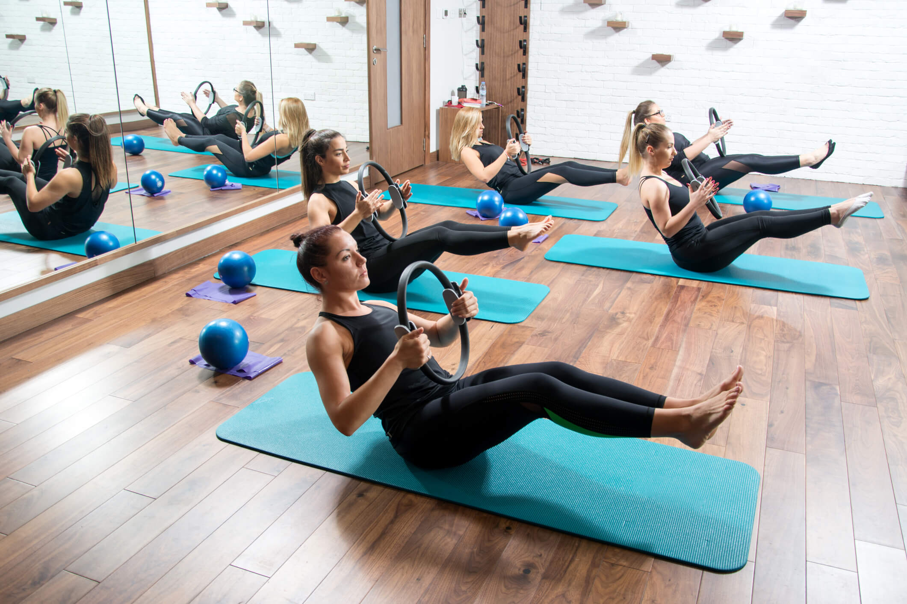
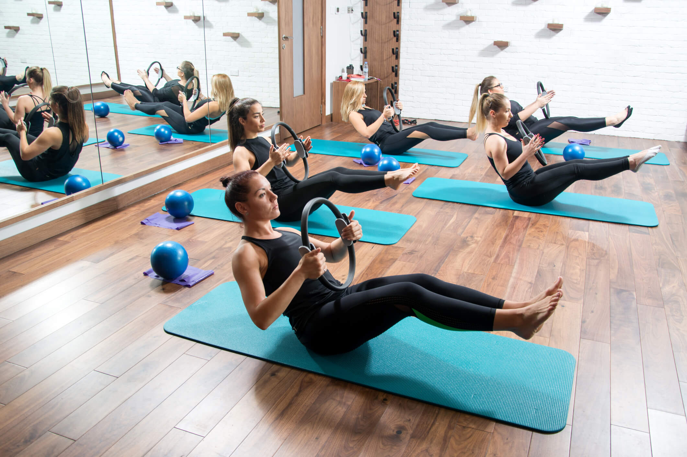

Nossos Tratamentos
Fisioterapia

A fisioterapia é uma ciência da saúde que se dedica ao estudo, prevenção e tratamento de distúrbios do movimento humano. Utilizando técnicas específicas e exercícios terapêuticos, o fisioterapeuta ajuda na recuperação física e funcional de pacientes de todas as idades, promovendo alívio de dores, fortalecimento muscular, melhoria na mobilidade e qualidade de vida.
Benefícios da Fisioterapia:
- Reabilitação de lesões musculares, ósseas e articulares
- Prevenção de condições crônicas
- Alívio de dores agudas e crônicas
- Melhoria da mobilidade e flexibilidade
- Tratamento especializado para diversas condições
Modalidades de Fisioterapia:
- Fisioterapia Ortopédica
- Fisioterapia Neurológica
- Fisioterapia Respiratória
- Fisioterapia Pediátrica
- Fisioterapia Geriátrica

Pilates

O Pilates é um método de exercício físico que promove o equilíbrio entre o corpo e a mente. Desenvolvido por Joseph Pilates no início do século XX, concentra-se em fortalecer o core, melhorar a flexibilidade, corrigir a postura e aumentar a consciência corporal.
Benefícios do Pilates:
- Fortalecimento muscular profundo
- Melhoria da postura
- Aumento da flexibilidade
- Maior consciência corporal
- Alívio do estresse
Modalidades de Pilates:
- Pilates Solo
- Pilates com Equipamentos

Acupuntura

A acupuntura é uma prática terapêutica milenar da medicina tradicional chinesa que busca restaurar o equilíbrio energético do corpo, promovendo saúde e bem-estar. Com o uso de agulhas finas inseridas em pontos específicos, a acupuntura estimula o fluxo de energia, conhecida como "Qi", ajudando a aliviar dores, reduzir o estresse e melhorar a função dos sistemas do corpo.
Benefícios da Acupuntura:
- Alívio da dor
- Redução do estresse e ansiedade
- Melhoria na qualidade do sono
- Fortalecimento do sistema imunológico
- Equilíbrio emocional
Modalidades de Acupuntura:
- Acupuntura Tradicional
- Eletroacupuntura
- Acupuntura Auricular
- Acupuntura a Laser

CONHEÇA NOSSA CLÍNICA
Fisioterapia


Pilates
 

Acupuntura